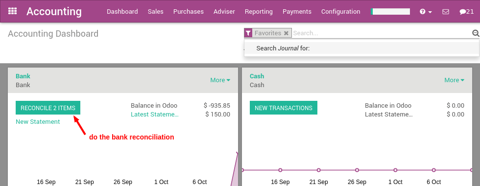
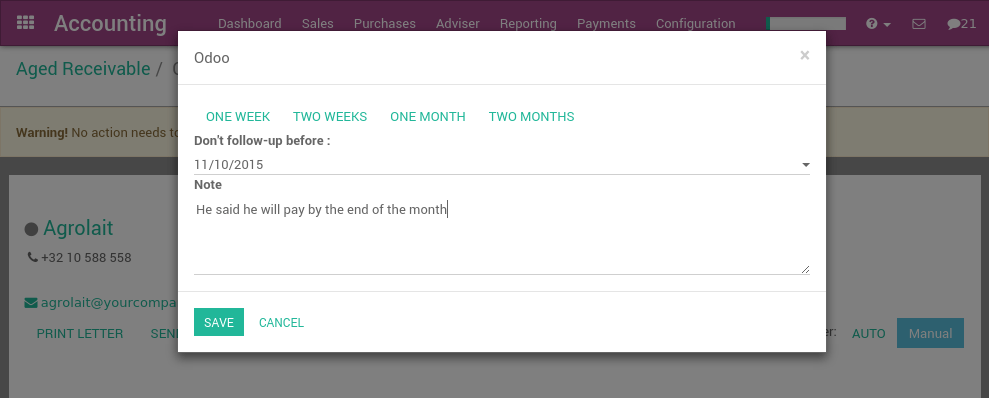

Getting paid and organizing customer reminders is always a difficult task, however it is critical for the health of the company to stay diligent about outstanding receivables. Fortunately, Odoo provides the right tools to track receivables, automate customer statements, and measure your performance.
Customer follow-ups: A step by step guide
Cleaning up outstanding payments
If you have any unreconciled transactions in your bank account, you will need to process them first before you begin analyzing your customers statements. This ensures that you have recorded all of the latest customer payments before sending out reminders to any customers with outstanding balances.
Checking the Aged Receivables report
After you have reconciled all of your bank accounts, you can then generate an accurate Aged Receivables Report from the Reports menu. This report will display all of the customers and their outstanding balances on open invoices.

The report displays this information in time increments to better paint a picture of the outstanding balances your customers hold and for how long they have held these outstanding balances. You can then appropriately focus your efforts on the appropriate customers.
You can then select any of the customers on this list and Odoo will open up their invoice details in the form of the Customer Follow-Up letter, also known as the Customer Statement.

From the customer statement, you can:
- Change and customize the message that is sent to the customer
- Send a reminder email to the customer
- Send a printed reminder letter to the customer
- Send automated printed reminders by utilizing our Docsaway integration
- Zoom in on the different open invoices or payments
- Remove an invoice or payment from the report (in case of conflict)
- Log any call notes made to the customer
- Schedule your next follow up task to stay on top of customer payments (e.g. call back in 15 days if not payments are made)
You can set reminders for when you would like to next contact the particular customer. Selecting Manual will open up the follow up scheduling tool, while selecting Auto will automatically recommend that you contact the customer 15 days from then if the customer has not yet paid for the invoice. Installing the Follow-Up Plans module will allow you to define automated actions and intervals to send reminders.
If you have already sent out a reminder to a customer a few days ago, a warning message will appear at the top of the screen, reminding you that you should not send another reminder so soon since one was already sent recently. Every time you log a note, Odoo will automatically set the next reminder date, unless you choose to manually set it by selecting the next reminder button at the top right of the screen.
Совет
You can also specify the expected payment date on an invoice line directly, therefore defining the next reminder in case the invoice has not been paid.
Sending customer statements
Send your customers reminders in batches in the menu .
Here Odoo will open all the statements awaiting to be processed, which is determined by the last reminder they received. You can choose to process them one by one, send multiple letters or emails in batches, or set a next action date for the next time they'll be contacted.
Примечание
If an invoice has not yet been paid, Odoo will remind you to contact at particular customer based after their next action date.
You can access the customer statement report daily and Odoo will only display the customers you need to contact on any given day. This is based on:
- Customers you have not yet received a payment from
- Customers that have not been reminded over the last X days ("X" being defined as the overdue date of the invoice after the first reminder, then the next action date set at every reminder)
Setting up your dunning process
The Payment Follow-up Management module allows you to define reminder plans. After installing it from the Apps menu, go to the Follow-up Levels menu in the accounting configuration to set up your dunning process.
Some Examples are:
- Email: 3 days before overdue date
- Email+Letter: at the overdue date
- Email+Call: 15 days after the overdue date
- Email+Letter: 60 days after the overdue date

Thanks to this module, you can send every email and letters in batches for all your customers at once. The next reminder will automatically be computed based on your configured follow-up plan.
The module will also add a red/green dot on each customer, this will allow you to easily mark customer status's with the following options: "Good Debtor, Normal Debtor, or bad debtors.

DSO: Measuring your performance
The DSO (Days of Outstanding Sales) is a measure of the average number of days that a company takes to collect revenue after a sale has been made. DSO is calculated by dividing the amount of accounts receivable during a given period by the total value of credit sales during the same period, and multiplying the result by the number of days in the period measured.
You can get the DSO of your company from the Executive Summary report under Reporting (check the KPI average debtors days).